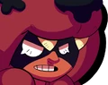
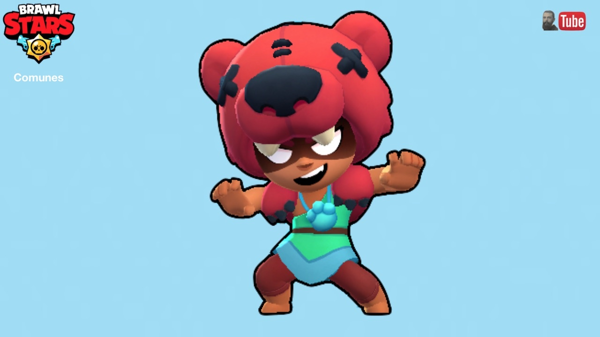

Nita
"¡Nita es una niña feroz que nunca se echa atrás en una pelea! El osito de peluche que lleva en la cabeza sirve de advertencia a los demás: no empujen al oso".

Nita es una Brawler rara que tiene una salud moderadamente alta y ataca con ondas de choque que tienen un alcance moderado y atraviesan a los enemigos, pudiendo golpear a varios de ellos al mismo tiempo. Ella es más notable por la capacidad de su Super para convocar a Bruce, un oso que tiene una salud moderadamente alta y ataques cuerpo a cuerpo rápidos. Su primer dispositivo, Bear Paws, aturdirá brevemente a todos los enemigos en un área alrededor de su oso. Su segundo Gadget, Faux Fur, protege a Bruce por un breve período de tiempo. Su primer Star Power, Bear with Me, cura a su Oso leve pero considerablemente cada vez que ella misma golpea a un enemigo con su ataque, y la cura de la misma manera cada vez que Bruce golpea a un enemigo. Su segundo Star Power, Hyper Bear, aumenta la velocidad de ataque de Bruce.
Ataque: Ruptura
"Nita envía una onda de choque que daña a los enemigos atrapados en el temblor".
Nita libera una onda de choque que causa un daño moderado y se recarga muy rápido. Tiene un alcance moderado y la onda de choque es bastante amplia. El ataque atraviesa enemigos y puede golpear a varios al mismo tiempo.
Súper: dominante
"Nita invoca el espíritu de Big Baby Bear para cazar a sus enemigos".
Nita convoca a un oso (Bruce) que persigue y ataca a los enemigos. El Oso camina hacia el enemigo más cercano incluso si está en un arbusto e intenta golpearlo con rápidos ataques cuerpo a cuerpo que causan poco daño. Bruce tiene la misma salud máxima que Nita.
